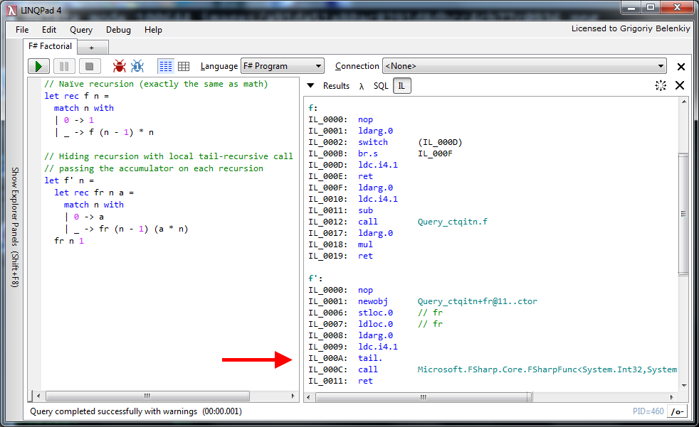
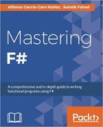

namespace System
Multiple items
type EntryPointAttribute =
inherit Attribute
new : unit -> EntryPointAttribute
Full name: Microsoft.FSharp.Core.EntryPointAttribute
--------------------
new : unit -> EntryPointAttribute
type EntryPointAttribute =
inherit Attribute
new : unit -> EntryPointAttribute
Full name: Microsoft.FSharp.Core.EntryPointAttribute
--------------------
new : unit -> EntryPointAttribute
val main : argv:string [] -> int
Full name: index.main
Full name: index.main
val argv : string []
val printfn : format:Printf.TextWriterFormat<'T> -> 'T
Full name: Microsoft.FSharp.Core.ExtraTopLevelOperators.printfn
Full name: Microsoft.FSharp.Core.ExtraTopLevelOperators.printfn
type Console =
static member BackgroundColor : ConsoleColor with get, set
static member Beep : unit -> unit + 1 overload
static member BufferHeight : int with get, set
static member BufferWidth : int with get, set
static member CapsLock : bool
static member Clear : unit -> unit
static member CursorLeft : int with get, set
static member CursorSize : int with get, set
static member CursorTop : int with get, set
static member CursorVisible : bool with get, set
...
Full name: System.Console
static member BackgroundColor : ConsoleColor with get, set
static member Beep : unit -> unit + 1 overload
static member BufferHeight : int with get, set
static member BufferWidth : int with get, set
static member CapsLock : bool
static member Clear : unit -> unit
static member CursorLeft : int with get, set
static member CursorSize : int with get, set
static member CursorTop : int with get, set
static member CursorVisible : bool with get, set
...
Full name: System.Console
Console.ReadLine() : string
val ignore : value:'T -> unit
Full name: Microsoft.FSharp.Core.Operators.ignore
Full name: Microsoft.FSharp.Core.Operators.ignore
Introduction to F#
Grigoriy BelenkiySoftware developer, S&P Global Market Intelligence
Denver Dev Day
May 4, 2018
Imperative vs Functional
Imperative programming
- Set of statements (sequence of actions)
- Changes in program state (mutable, shared)
- Describes how program operates
- FORTRAN (1954), OOP - Simula 67 (1960's)
Functional programming
- Evaluation of mathematical functions
- Avoids mutable state and side-effects
- Output value depends only on input
Functional programming
- Lambda calculus (1930's)
- Math theory of functions and their evaluation
- Basis of almost all functional programming languages today
- \(f(x) = x^{2} + 2 \quad \equiv \quad \lambda x.x^{2} + 2\)
WTF#?
- ML
- OCaml
- F#
Why F#?
- Conciseness
- Convenience
- Correctness
- Concurrency
- Completeness
Hello World
1: 2: 3: 4: 5: 6: 7: 8: 9: 10: 11: 12: 13: 14: 15: 16: |
|
FizzBuzz
Write a program that prints the numbers from 1 to 100. But for multiples of three print “Fizz” instead of the number and for the multiples of five print “Buzz”. For numbers which are multiples of both three and five print “FizzBuzz”.
Factorial
\({\displaystyle n!= \prod_{k=1}^{n} k}\)
\(n! = \begin{cases} 1 & \quad \text{if } n = 0,\\ (n-1)! \times n & \quad \text{if }n > 0 \end{cases}\)
Tail Recursion

FizzBuzz (revisited)
Metric mishap caused loss of NASA orbiter
(CNN) -- NASA lost a $125 million Mars orbiter because a Lockheed Martin engineering team used English [imperial] units of measurement while the agency's team used the more conventional metric system for a key spacecraft operation, according to a review finding released Thursday.
Units of Measure
- Float, signed int
- Compile-time checking
- Length, volume, mass, and so on... temperature?
Type providers
- CSV
- SQL
- JSON
- App.config
Async
Resources
On-line
- F# Foundation (fsharp.org)
- F# For Fun And Profit (fsharpforfunandprofit.com)
- Try F# (tryfsharp.org)
- F# Cheatsheet (dungpa.github.io/fsharp-cheatsheet)
Books
 Real-World Functional Programming With examples in F# and C#by Tomas Petricek with Jon Skeet |
 F# Deep Divesedited by Tomas Petricek and Phillip Trelford |
Expert F# 4.0by Don Syme, Adam Granicz, Antonio Cisternino |
Mastering F#by Alfonso Garcia-Caro Nunez, Suhaib Fahad |
Questions?
May the Fourth be with you!
1:
|
|